library(lattice)
library(latticeExtra)
library(splines)
library(nlme)
library(mgcv)
library(maps)
library(sf)
library(RColorBrewer)4 lattice 入门
If you imagine that this pen is Trellis, then Lattice is not this pen.
— Paul Murrell 1
lattice 最初是受到商业统计软件 S/S-Plus 中的 Trellis 组件启发，打算在 R 软件中重新实现一套新的绘图系统，在使用接口上保持与 Trellis 兼容，Trellis 使用文档也同样适用于 lattice。
本章主要介绍 lattice 包 (Sarkar 2008) 及其相关的 latticeExtra 包。
4.1 分组散点图
函数 xyplot() 在 lattice 包中非常具有代表性，掌握此函数的作图规律，其它函数学起来也就不难了。分组散点图是一个非常常见的、用来描述变量之间关系的图形，下面就以绘制一个分组散点图来介绍函数 xyplot() 的用法。
library(lattice)
xyplot(
x = Sepal.Length ~ Petal.Length, groups = Species, scales = "free",
data = iris, grid = TRUE, xlab = "萼片长度", ylab = "花瓣长度",
auto.key = list(space = "top", columns = 3)
)
- 参数
x需要传递 R 语言中的表达式，这是一种被广泛使用的公式语法，示例中为Sepal.Length ~ Petal.Length，表示横坐标为Petal.Length， 纵坐标为Sepal.Length。 - 参数
groups指定分组变量，此处为Species变量，表示鸢尾花种类。 - 参数
scales设置坐标轴刻度，scales = "free"表示去掉边框上面和右面的刻度线。 - 参数
data指定绘图数据，此处为iris数据集。 - 参数
grid控制是否添加背景网格线，此处为TRUE表示添加背景网格线。 - 参数
xlab和参数ylab分别指定横、纵坐标轴标签。 - 参数
auto.key设置图例，示例中设置space = "top"将图例置于图形上方，设置columns = 3使条目排成 3 列，此外，设置reverse.rows = TRUE还可以使图例中的条目顺序反向。
除了通过 space 参数设置图例的位置，还可以通过坐标设置图例的位置，比如下 图 4.2 (b) 中设置图例的位置坐标为 x = 1, y = 0 使得图例位于图的右下角。图例坐标的参考点是原点 x = 0, y = 0 就是左下角的位置，而右上角的位置为 x = 1, y = 1 。
xyplot(
Sepal.Length ~ Petal.Length, groups = Species, data = iris,
scales = "free", grid = TRUE, xlab = "萼片长度", ylab = "花瓣长度",
auto.key = list(space = "right", columns = 1)
)
xyplot(
Sepal.Length ~ Petal.Length, groups = Species, data = iris,
scales = "free", grid = TRUE, xlab = "萼片长度", ylab = "花瓣长度",
auto.key = list(corner = c(1, 0))
)
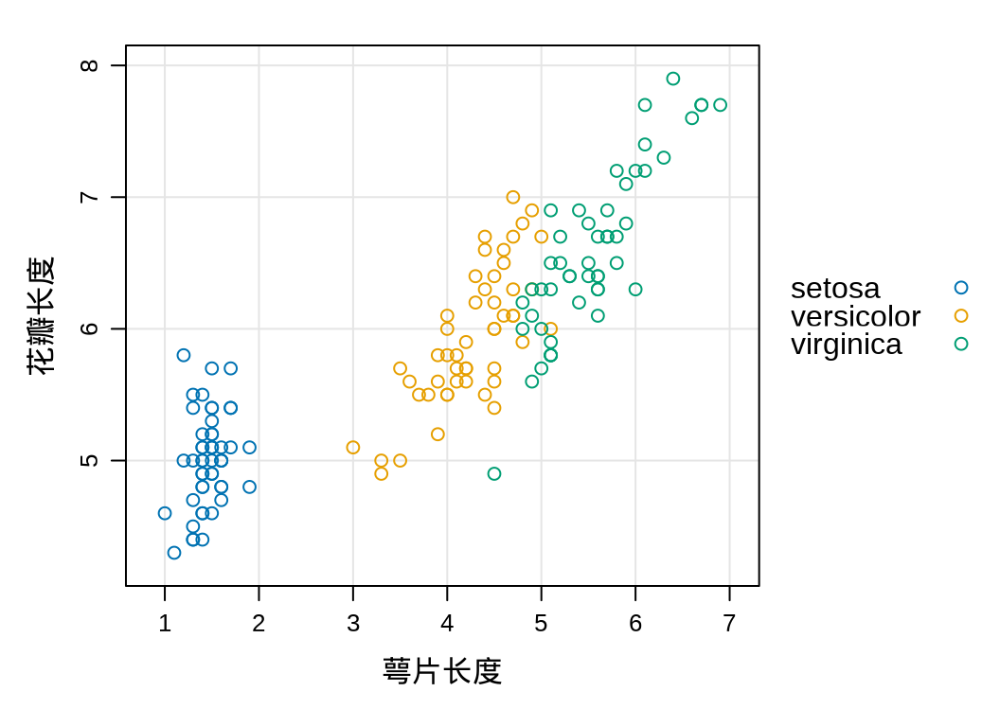
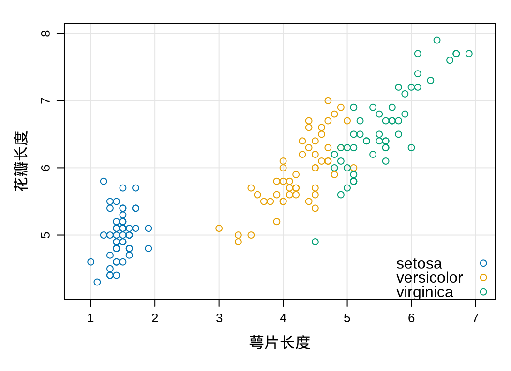
除了上面介绍的几个参数，还有许多其它参数，其中一部分会在后续介绍其它种类的图形时顺带介绍，剩余的部分请感兴趣的读者查看函数 xyplot() 的帮助文档。
4.2 图形参数
类似 Base R 绘图系统中的图形参数设置函数 par()和 ggplot2 包中的主题设置函数 theme()， lattice 包也有图形参数设置函数 trellis.par.set() ，而图形参数查询函数为 trellis.par.get() 。可设置的图形参数非常多，仅常用的也不少。首先来看看有哪些图形参数可以设置。
tp <- trellis.par.get()
names(tp)
#> [1] "grid.pars" "fontsize" "background"
#> [4] "panel.background" "clip" "add.line"
#> [7] "add.text" "plot.polygon" "box.dot"
#> [10] "box.rectangle" "box.umbrella" "dot.line"
#> [13] "dot.symbol" "plot.line" "plot.symbol"
#> [16] "reference.line" "strip.background" "strip.shingle"
#> [19] "strip.border" "superpose.line" "superpose.symbol"
#> [22] "superpose.polygon" "regions" "shade.colors"
#> [25] "axis.line" "axis.text" "axis.components"
#> [28] "layout.heights" "layout.widths" "box.3d"
#> [31] "par.title.text" "par.xlab.text" "par.ylab.text"
#> [34] "par.zlab.text" "par.main.text" "par.sub.text"可以看到，图形参数着实非常多，知道了这么多图形参数，而每个参数又有哪些选项可取呢？不忙，再看看图形参数的结构，比如 superpose.symbol 。
tp$superpose.symbol
#> $alpha
#> [1] 1 1 1 1 1 1 1
#>
#> $cex
#> [1] 0.8 0.8 0.8 0.8 0.8 0.8 0.8
#>
#> $col
#> [1] "#0072B2" "#E69F00" "#009E73" "#D55E00" "#56B4E9" "#F0E442"
#> [7] "#CC79A7"
#>
#> $fill
#> [1] "#CCFFFF" "#FFCCFF" "#CCFFCC" "#FFE5CC" "#CCE6FF" "#FFFFCC"
#> [7] "#FFCCCC"
#>
#> $font
#> [1] 1 1 1 1 1 1 1
#>
#> $pch
#> [1] 1 1 1 1 1 1 1这是一个列表，有 6 个元素，每个元素设置符号的不同属性，依次是透明度 alpha、大小 cex、颜色 col、填充色 fill、字型 font 和类型 pch ，这些属性的含义与函数 par() 是一致的。下 图 4.3 展示所有的常用图形参数及其可设置的选项。
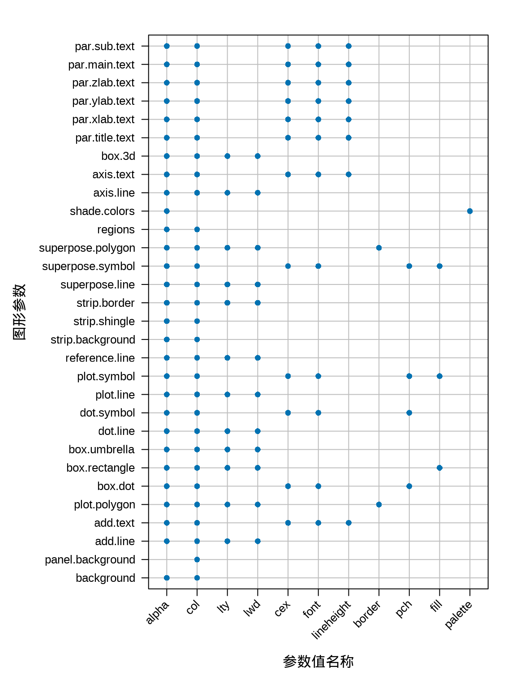
现在，知道了图形设置参数及其结构，还需要知道它们究竟在绘图时起什么作用，也就是说它们控制图形中的哪部分元素及效果。下 图 4.4 展示 lattice 包图形参数效果。由图可知，图形参数 superpose.symbol 是控制散点图中的点，点可以是普通的点，也可以是任意的字母符号。
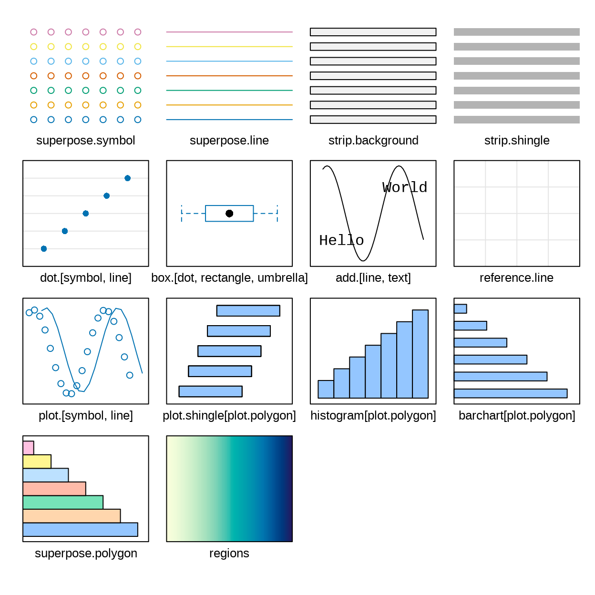
在之前的 图 4.1 的基础上，设置 type = c("p", "r") 添加回归线。通过图形参数 par.settings 设置各类绘图元素的符号类型和大小，该参数接受一个列表类型的数据，列表的元素还是列表，列表的层层嵌套实现图中元素的精细控制。列表元素 superpose.symbol 控制点的符号，pch = 16 设置为 16，相比于默认的点要大一号。列表元素 superpose.line 控制线，lwd = 2 设置宽度为 2，比默认的宽度大一倍，lty = 3 设置线的类型为 3，表示虚线。通过参数 auto.key 设置图例位置，图例位于图形上方，图例中的条目排成3列。
xyplot(
Sepal.Length ~ Petal.Length, groups = Species, data = iris,
scales = "free", grid = TRUE, type = c("p", "r"),
xlab = "萼片长度", ylab = "花瓣长度",
auto.key = list(columns = 3, space = "top"),
par.settings = list(
superpose.symbol = list(pch = 16),
superpose.line = list(lwd = 2, lty = 3)
)
)
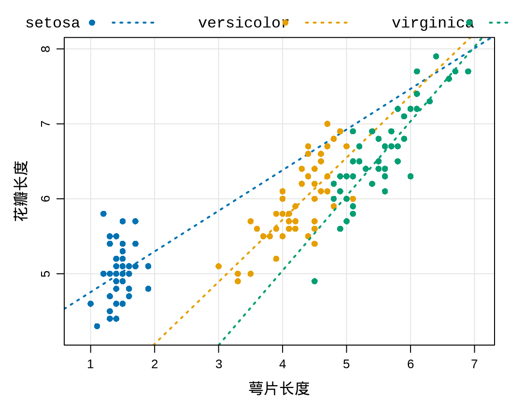
latticeExtra 包有两个函数专门用来设置图形风格，分别是 theEconomist.theme() 和 ggplot2like() ，这两个主题函数提供一系列预设的图形参数，前者来自《经济学人》杂志的图形主题，后者来自 ggplot2 包的默认绘图主题。
library(latticeExtra)
xyplot(
Sepal.Length ~ Petal.Length, groups = Species, data = iris,
scales = "free", grid = TRUE, xlab = "萼片长度", ylab = "花瓣长度",
auto.key = list(space = "top", columns = 3),
par.settings = ggplot2like()
)
xyplot(
Sepal.Length ~ Petal.Length, groups = Species, data = iris,
scales = "free", grid = TRUE, xlab = "萼片长度", ylab = "花瓣长度",
auto.key = list(space = "top", columns = 3),
par.settings = theEconomist.theme(with.bg = TRUE, box = "transparent")
)
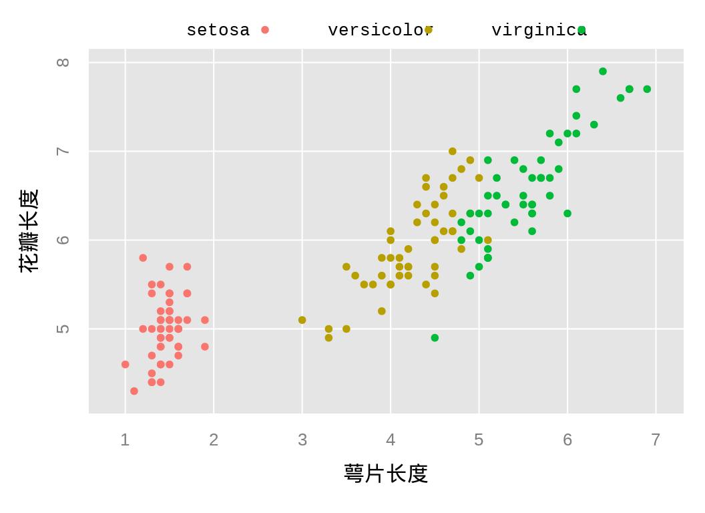
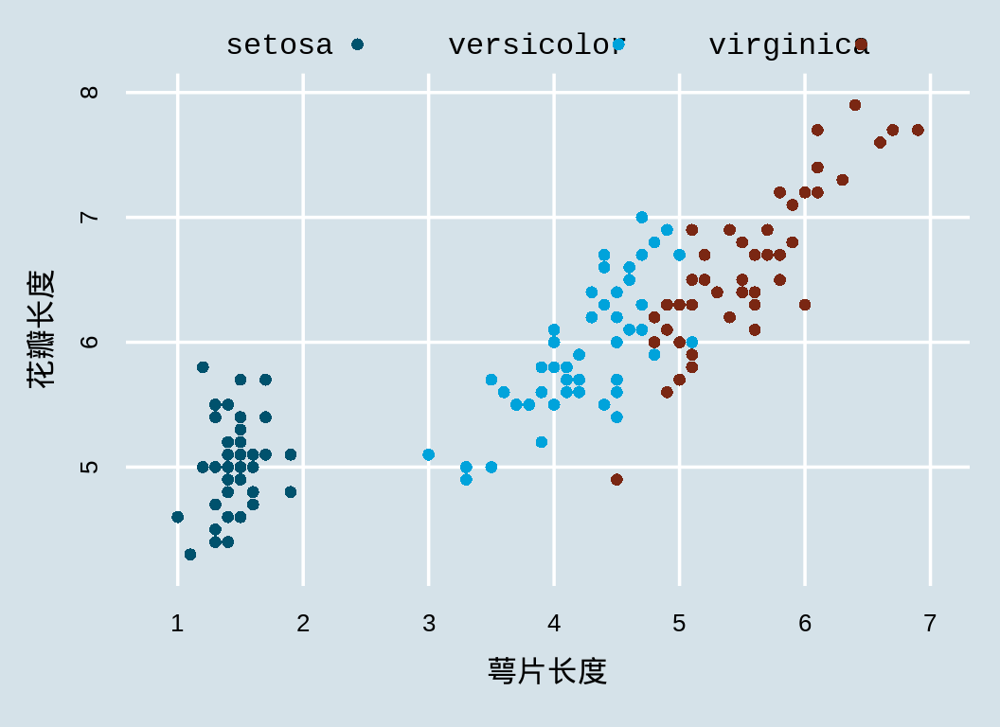
4.3 常见图形
4.3.1 分组柱形图
本节所用数据集 Insurance 来自 MASS 包，记录一家保险公司面临风险的投保人数量，以及在 1973 年第 3 季度他们提出汽车理赔的数量。数据类型、各个变量的类型及部分预览数据如下：
data(Insurance, package = "MASS")
str(Insurance)
#> 'data.frame': 64 obs. of 5 variables:
#> $ District: Factor w/ 4 levels "1","2","3","4": 1 1 1 1 1 1 1 1 1 1 ...
#> $ Group : Ord.factor w/ 4 levels "<1l"<"1-1.5l"<..: 1 1 1 1 2 2 2 2 3 3 ...
#> $ Age : Ord.factor w/ 4 levels "<25"<"25-29"<..: 1 2 3 4 1 2 3 4 1 2 ...
#> $ Holders : int 197 264 246 1680 284 536 696 3582 133 286 ...
#> $ Claims : int 38 35 20 156 63 84 89 400 19 52 ...其中，District 表示投保人居住的地区，因子型变量。Group 汽车按油箱大小分组的变量，有序的因子型变量。Age 投保人的年龄段标签，有序的因子型变量。Holders 投保人数量，整型变量。Claims 理赔数量，整型变量。下 图 4.7 先按投保人的汽车类型分面，再按投保人所在地区分组，展示理赔频度与投保人年龄的关系。
barchart(
Claims / Holders ~ Age | Group, groups = District,
data = Insurance, xlab = "年龄段", ylab = "理赔频度",
auto.key = list(space = "top", columns = 4, title = "地区", cex.title = 1)
)
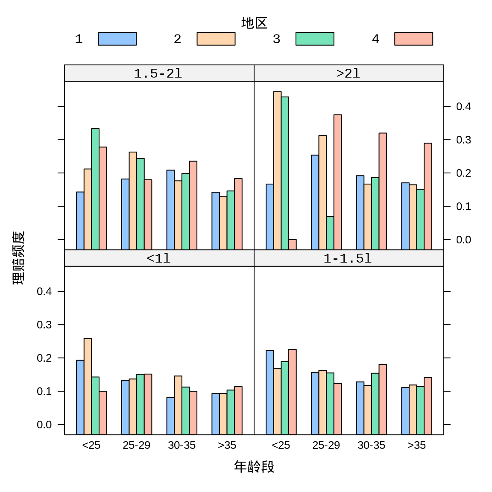
函数 barchart() 中的公式 Claims / Holders ~ Age | Group ，斜杠 / 表示除法，波浪线 ~ 表示响应变量与自变量的分界，竖线 | 表示分面。
4.3.2 分组箱线图
bwplot(Petal.Length ~ Species, data = iris, scales = "free",
xlab = "鸢尾花种类", ylab = "花瓣长度")
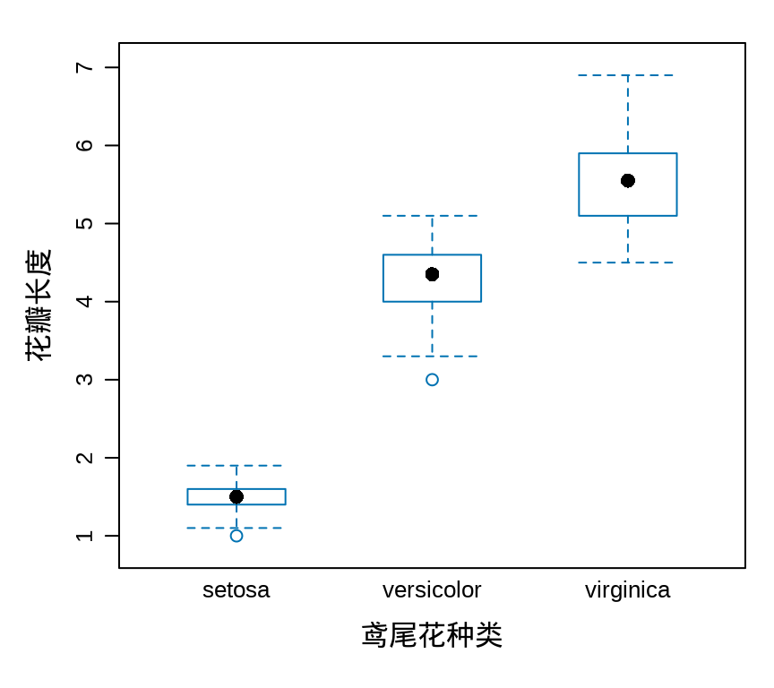
4.3.3 经验分布图
用阶梯图表示累积经验分布图，纵轴表示累积概率，不同种类的鸢尾花，花瓣长度的分布明显不同。根据 Glivenko–Cantelli 定理，经验分布函数以概率 1 收敛至累积分布函数。
library(latticeExtra)
ecdfplot(~ Petal.Length | Species, data = iris, scales = "free",
xlab = "花瓣长度", ylab = "累积概率")
4.3.4 回归曲线图
- splines 自然立方样条
ns() - mgcv 广义可加模型
s()
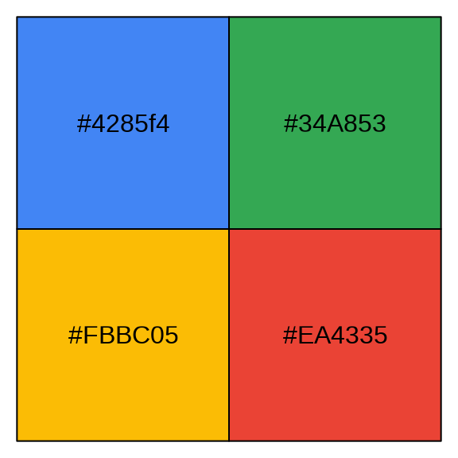
图 4.11 中用不同的回归模型拟合数据中的趋势。1920s 汽车行驶距离和速度的关系图。函数 panel.smoother() 来自 latticeExtra 包
library(splines)
library(nlme)
library(mgcv)
xyplot(dist ~ speed,
data = cars, scales = "free", xlab = "速度", ylab = "距离",
panel = function(x, y, ...) {
panel.xyplot(x, y, ...)
panel.smoother(y ~ x,
col.line = "#EA4335", method = "lm", ...
)
}
)
xyplot(dist ~ speed,
data = cars, scales = "free", xlab = "速度", ylab = "距离",
panel = function(x, y, ...) {
panel.xyplot(x, y, ...)
panel.smoother(y ~ x,
col.line = "#4285f4", method = "loess", span = 0.9, ...
)
}
)
xyplot(dist ~ speed,
data = cars, scales = "free", xlab = "速度", ylab = "距离",
panel = function(x, y, ...) {
panel.xyplot(x, y, ...)
panel.smoother(y ~ ns(x, 5),
col.line = "#34A853", method = "lm", ...
)
}
)
xyplot(dist ~ speed,
data = cars, scales = "free", xlab = "速度", ylab = "距离",
panel = function(x, y, ...) {
panel.xyplot(x, y, ...)
panel.smoother(y ~ s(x),
col.line = "#FBBC05", method = "gam", ...
)
}
)
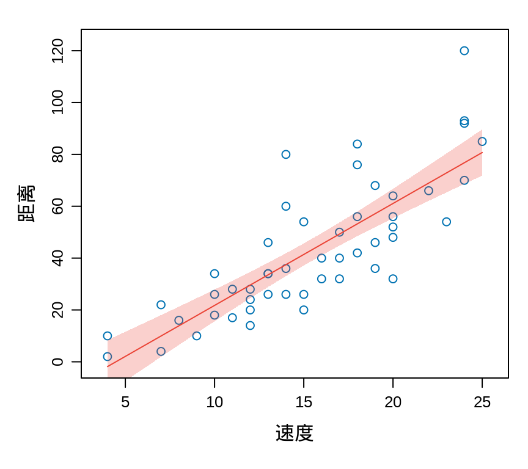
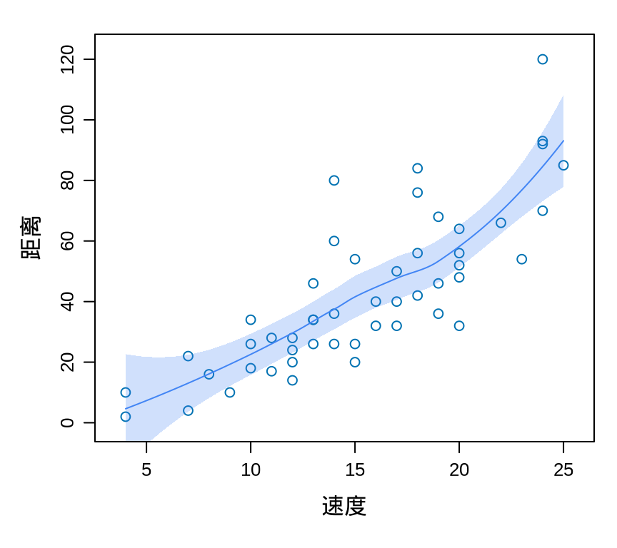
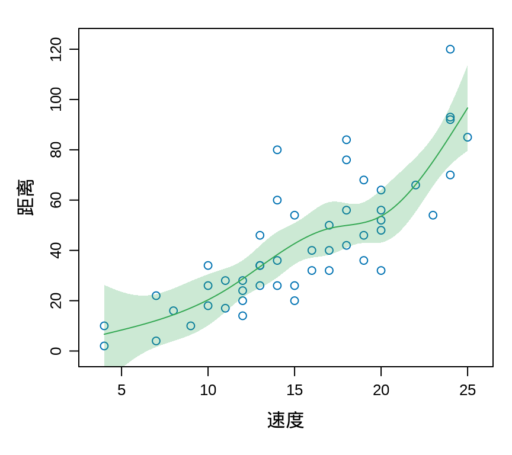
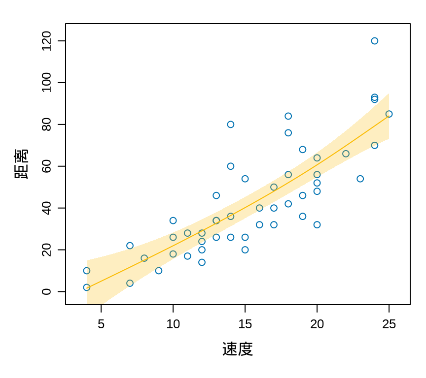
4.3.5 置信区间图
各个郡县每 10 万人当中因癌症死亡的人数。USCancerRates 数据集来自 latticeExtra 包，记录各个郡县的癌症死亡率及其置信区间，下图展示新泽西州各个郡县的癌症死亡率及其置信区间。
segplot(reorder(county, rate.male) ~ LCL95.male + UCL95.male,
data = subset(USCancerRates, state == "New Jersey"),
draw.bands = FALSE, centers = rate.male,
scales = list(x = list(alternating = 1, tck = c(1, 0))),
xlab = "癌症死亡率", ylab = "郡县"
)
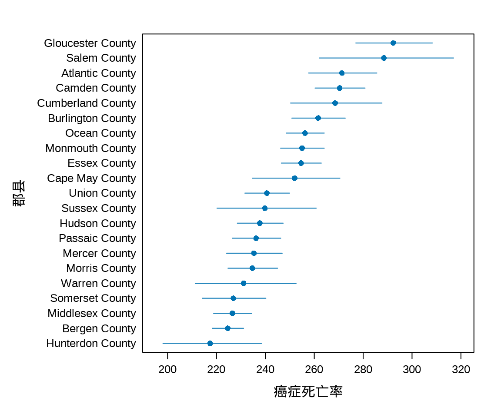
4.3.6 置信椭圆图
latticeExtra 包的函数 panel.ellipse() 可以绘制置信椭圆。二维数据，置信水平为 0.95 时，置信椭圆。
xyplot(Sepal.Length ~ Petal.Length,
groups = Species, data = iris, scales = "free",
xlab = "萼片长度", ylab = "花瓣长度",
par.settings = list(
superpose.symbol = list(pch = 16),
superpose.line = list(lwd = 2, lty = 3)
),
panel = function(x, y, ...) {
panel.xyplot(x, y, ...)
panel.ellipse(x, y, level = 0.85, ...)
},
auto.key = list(space = "top", columns = 3)
)
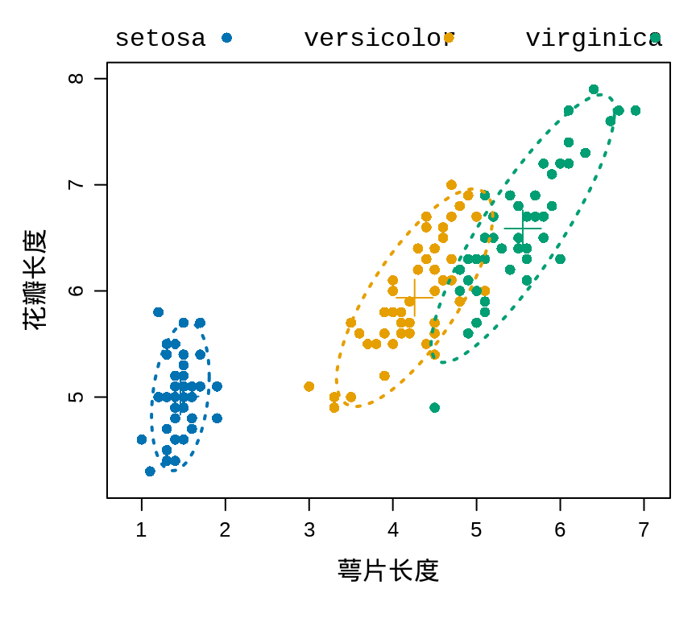
4.3.7 切片水平图
按照深度降序排列，根据震级 mag 划分 4 个区间，每个区间内数据点的数量比较平衡，相邻区间之间有重叠部分。对数据进行切片，观察连续的切片数据，增加一个维度。
对震深排序的目的是让数据点按照一定的顺序绘制在图上，数据点相距较近容易互相覆盖。使得在二维平面上，通过对数据点的染色，也能体现地震深度在空间中的层次变化。
不同的震级下，地震深度在空间中的变化是一致的。
# 震级区间
quakes$Magnitude <- equal.count(quakes$mag, number = 4)
# 震深
depth.ord <- rev(order(quakes$depth))
quakes.ordered <- quakes[depth.ord, ]Intervals:
min max count
1 3.95 4.55 484
2 4.25 4.75 492
3 4.45 4.95 425
4 4.65 6.45 415
Overlap between adjacent intervals:
[1] 293 306 217函数 equal.count() 内部调用函数 co.intervals() ，还有两个参数 number 和 overlap。如果要没有重叠的话，得设置 overlap = 0 。
quakes$Magnitude <- equal.count(quakes$mag, number = 4, overlap = 0)levelplot(depth ~ long + lat | Magnitude,
data = quakes.ordered, scales = "free",
panel = panel.levelplot.points,
prepanel = prepanel.default.xyplot,
type = c("p", "g"), layout = c(2, 2)
)
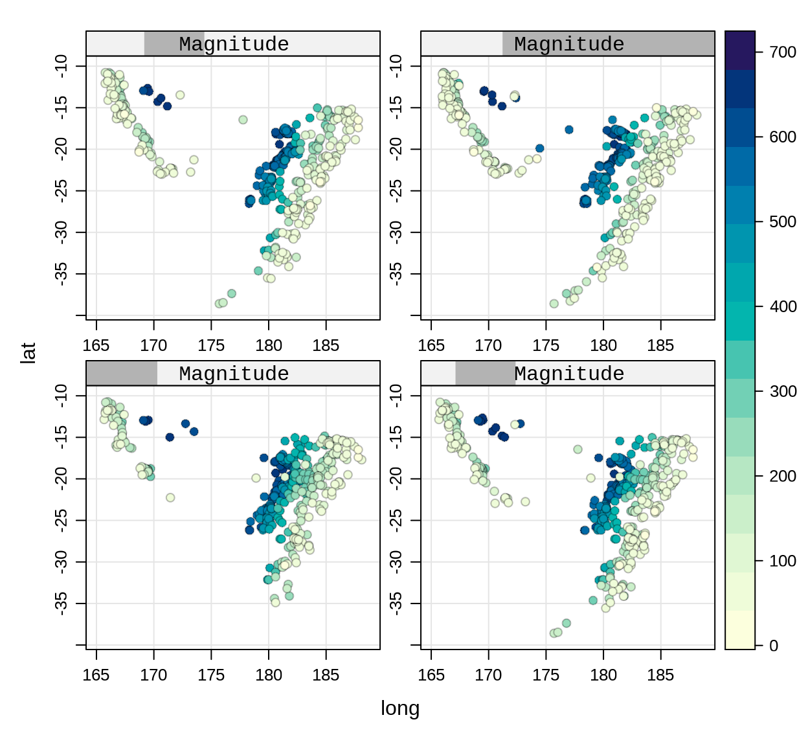
4.3.8 三维散点图
lattice 包的函数 cloud() 三维散点图
cloud(Sepal.Length ~ Sepal.Width + Petal.Length,
groups = Species, data = iris,
# 去掉方向箭头
scales = list(arrows = FALSE, col = "black"),
xlab = list("萼片宽度", rot = 30),
ylab = list("花瓣长度", rot = -35),
zlab = list("萼片长度", rot = 90),
# 减少三维图形的边空
lattice.options = list(
layout.widths = list(
left.padding = list(x = -0.5, units = "inches"),
right.padding = list(x = -1.0, units = "inches")
),
layout.heights = list(
bottom.padding = list(x = -1.5, units = "inches"),
top.padding = list(x = -1.5, units = "inches")
)
),
par.settings = list(
# 点的类型
superpose.symbol = list(pch = 16),
# 去掉外框线
axis.line = list(col = "transparent")
)
)
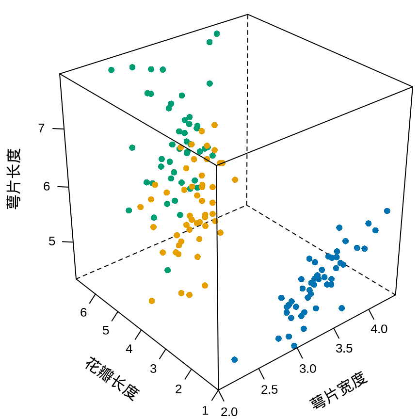
下面是一个示例，自定义面板函数 panel.3d.cloud 。
注记
图底部的网格待改进，生成网格线的代码太死板。
# 加载数据
rongelap <- readRDS(file = "data/rongelap.rds")
rongelap_coastline <- readRDS(file = "data/rongelap_coastline.rds")
library(lattice)
# 参考 lattice 书籍的图 6.5 的绘图代码
panel.3dcoastline <- function(..., rot.mat, distance, xlim, ylim, zlim,
xlim.scaled, ylim.scaled, zlim.scaled) {
scale.vals <- function(x, original, scaled) {
scaled[1] + (x - original[1]) * diff(scaled) / diff(original)
}
scaled.map <- rbind(
scale.vals(rongelap_coastline$cX, xlim, xlim.scaled),
scale.vals(rongelap_coastline$cY, ylim, ylim.scaled),
zlim.scaled[1]
)
m <- ltransform3dto3d(scaled.map, rot.mat, distance)
panel.lines(m[1, ], m[2, ], col = "black")
}
rongelap_grid_line <- rbind.data.frame(
data.frame(x = 1000 * -6:0, y = -3500),
data.frame(x = 1000 * 0:-6, y = -3000),
data.frame(x = 1000 * -6:0, y = -2500),
data.frame(x = 1000 * 0:-6, y = -2000),
data.frame(x = 1000 * -6:0, y = -1500),
data.frame(x = 1000 * 0:-6, y = -1000),
data.frame(x = 1000 * -6:0, y = -500),
data.frame(x = 1000 * 0:-6, y = 0),
data.frame(x = -6000, y = -500 * 7:0),
data.frame(x = -5000, y = -500 * 0:7),
data.frame(x = -4000, y = -500 * 7:0),
data.frame(x = -3000, y = -500 * 0:7),
data.frame(x = -2000, y = -500 * 7:0),
data.frame(x = -1000, y = -500 * 0:7),
data.frame(x = 0, y = -500 * 7:0)
)
panel.3dgridline <- function(..., rot.mat, distance, xlim, ylim, zlim,
xlim.scaled, ylim.scaled, zlim.scaled) {
scale.vals <- function(x, original, scaled) {
scaled[1] + (x - original[1]) * diff(scaled) / diff(original)
}
scaled.map <- rbind(
scale.vals(rongelap_grid_line$x, xlim, xlim.scaled),
scale.vals(rongelap_grid_line$y, ylim, ylim.scaled),
zlim.scaled[1]
)
m <- ltransform3dto3d(scaled.map, rot.mat, distance)
panel.lines(x = m[1,], y = m[2,], col = "gray", lty = 2)
}
cloud(counts / time ~ cX * cY,
data = rongelap, col = "black",
xlim = c(-6500, 100), ylim = c(-3800, 150),
scales = list(arrows = FALSE, col = "black"),
aspect = c(0.75, 0.5),
xlab = list("横坐标（米）", rot = 20),
ylab = list("纵坐标（米）", rot = -50),
zlab = list("辐射强度", rot = 90),
type = c("p", "h"), pch = 16, lwd = 0.5,
panel.3d.cloud = function(...) {
panel.3dgridline(...)
panel.3dcoastline(...) # 海岸线
panel.3dscatter(...)
},
# 减少三维图形的边空
lattice.options = list(
layout.widths = list(
left.padding = list(x = -0.5, units = "inches"),
right.padding = list(x = -1.0, units = "inches")
),
layout.heights = list(
bottom.padding = list(x = -1.5, units = "inches"),
top.padding = list(x = -1.5, units = "inches")
)
),
par.settings = list(
# 移除几条内框线
# box.3d = list(col = c(1, 1, NA, NA, 1, NA, 1, 1, 1)),
# 刻度标签字体大小
axis.text = list(cex = 0.8),
# 去掉外框线
axis.line = list(col = "transparent")
),
# 设置三维图的观察方位
screen = list(z = 30, x = -65, y = 0)
)
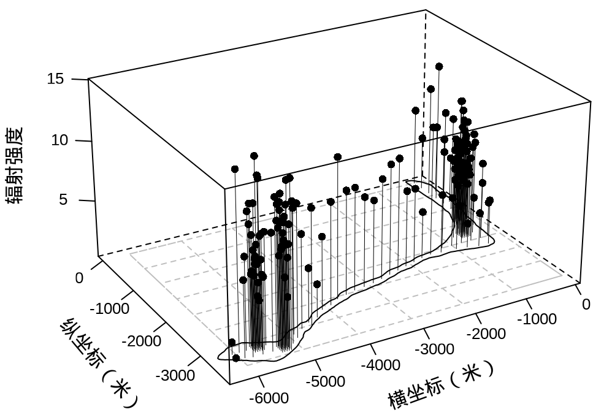
4.3.9 三维透视图
有如下参数方程
\[ \begin{aligned} \left\{ \begin{array}{l} x(u,v) = \cos(u)\big(r + \cos(u / 2)\big) \\ y(u,v) = \sin(u)\big(r + \cos(u / 2)\sin(tv) - \sin(u / 2)\sin(2tv)\big)\sin(tv) - \sin(u / 2)\sin(2tv) \\ z(u,v) = \sin(u / 2) \sin(tv) + \cos(u / 2) \sin(tv) \end{array} \right. \end{aligned} \]
其中，\(u\) 和 \(v\) 是参数，\(\frac{u}{2\pi} \in [0.3,1.25], \frac{v}{2\pi} \in [0,1]\)，\(r\) 和 \(t\) 是常量，不妨设 \(r = 2\) 和 \(t=1\) 。
# lattice 书 6.3.1 节 参数
kx <- function(u, v) cos(u) * (r + cos(u / 2))
ky <- function(u, v) {
sin(u) * (r + cos(u / 2) * sin(t * v) -
sin(u / 2) * sin(2 * t * v)) * sin(t * v) -
sin(u / 2) * sin(2 * t * v)
}
kz <- function(u, v) sin(u / 2) * sin(t * v) + cos(u / 2) * sin(t * v)
n <- 50
u <- seq(0.3, 1.25, length = n) * 2 * pi
v <- seq(0, 1, length = n) * 2 * pi
um <- matrix(u, length(u), length(u))
vm <- matrix(v, length(v), length(v), byrow = TRUE)
r <- 2
t <- 1
wireframe(kz(um, vm) ~ kx(um, vm) + ky(um, vm),
shade = TRUE, drape = FALSE,
xlab = expression(x[1]), ylab = expression(x[2]),
zlab = list(expression(
italic(f) ~ group("(", list(x[1], x[2]), ")")
), rot = 90), alpha = 0.75,
scales = list(arrows = FALSE, col = "black"),
# 减少三维图形的边空
lattice.options = list(
layout.widths = list(
left.padding = list(x = -0.5, units = "inches"),
right.padding = list(x = -1.0, units = "inches")
),
layout.heights = list(
bottom.padding = list(x = -1.5, units = "inches"),
top.padding = list(x = -1.5, units = "inches")
)
),
par.settings = list(axis.line = list(col = "transparent")),
screen = list(z = 30, x = -65, y = 0)
)
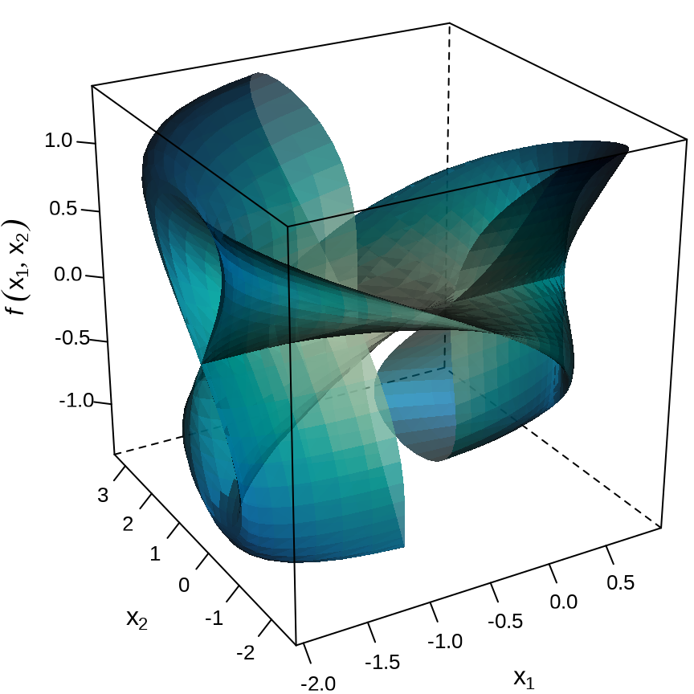
绘图函数 wireframe() 支持使用公式语法，也支持矩阵类型的数据绘制透视图。
wireframe(volcano,
drape = TRUE, colorkey = FALSE, shade = TRUE,
xlab = list("南北方向", rot = -40),
ylab = list("东西方向", rot = 45),
zlab = list("高度", rot = 90),
# 减少三维图形的边空
lattice.options = list(
layout.widths = list(
left.padding = list(x = -.6, units = "inches"),
right.padding = list(x = -1.0, units = "inches")
),
layout.heights = list(
bottom.padding = list(x = -.8, units = "inches"),
top.padding = list(x = -1.0, units = "inches")
)
),
# 设置坐标轴字体大小
par.settings = list(
axis.line = list(col = "transparent"),
fontsize = list(text = 12, points = 10)
),
scales = list(arrows = FALSE, col = "black"),
screen = list(z = -45, x = -50, y = 0)
)
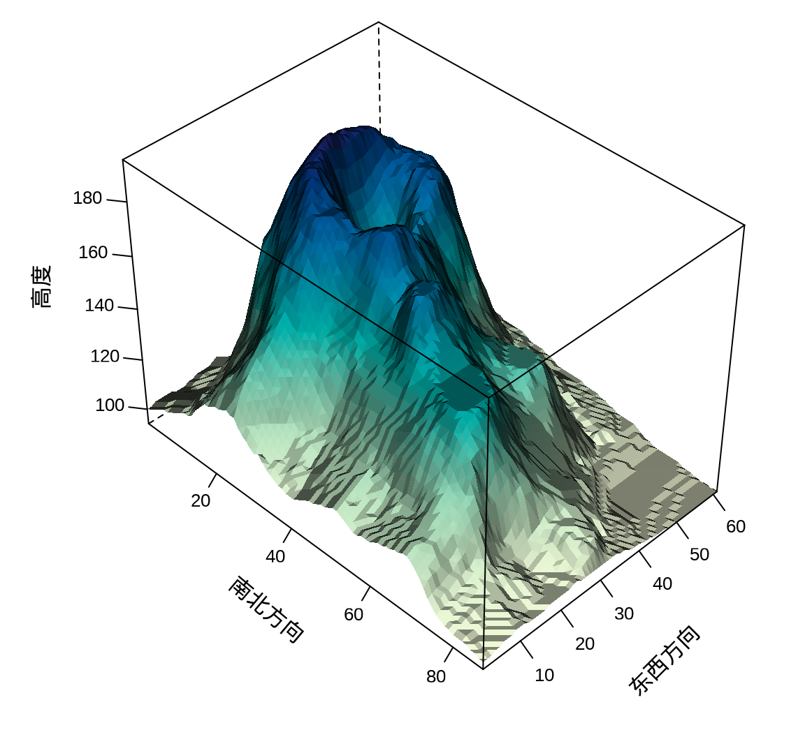
4.3.10 地形轮廓图
绘图函数 levelplot() 支持使用公式语法，也支持矩阵类型的数据绘制轮廓图。基于奥克兰火山地形数据 volcano 绘制轮廓图，volcano 是矩阵类型的数据。
levelplot(volcano, useRaster = TRUE,
# 去掉图形上、右边多余的刻度线
scales = list(
x = list(alternating = 1, tck = c(1, 0)),
y = list(alternating = 1, tck = c(1, 0))
),
par.settings = list(
# x/y 轴标签字体，刻度标签字体
par.xlab.text = list(fontfamily = "Noto Serif CJK SC"),
par.ylab.text = list(fontfamily = "Noto Serif CJK SC"),
axis.text = list(fontfamily = "sans")
),
xlab = "南北方向", ylab = "东西方向"
)
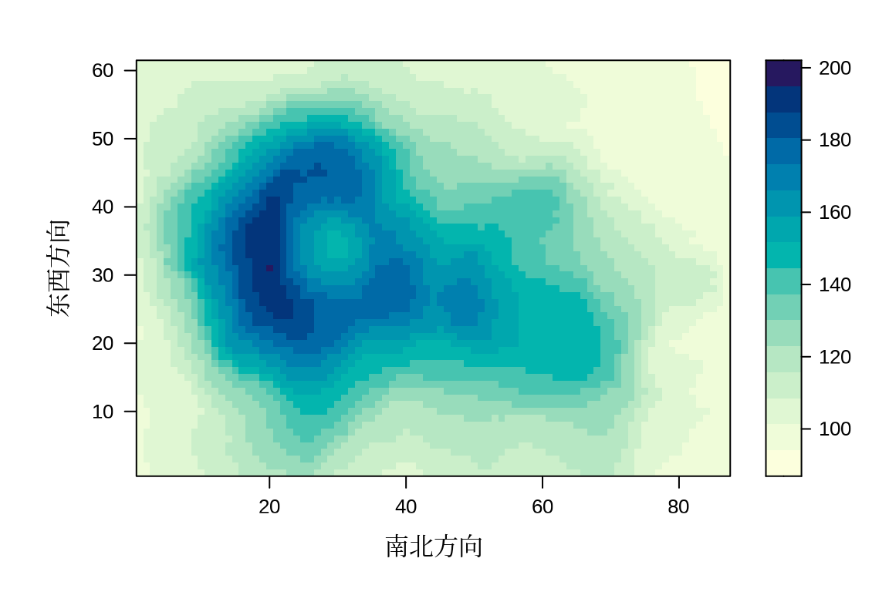
函数 levelplot() 的参数 col.regions 需要传递一个函数，示例中使用的默认设置。常见的函数有 hcl.colors() 、 gray.colors() 、terrain.colors() 、cm.colors() 和 topo.colors() 等，函数 hcl.colors() 默认使用 viridis 调色板，还可以用函数 colorRampPalette() 构造调色板函数。
data(topo, package = "MASS")
levelplot(z ~ x * y, data = topo, scales = "free",
panel = panel.2dsmoother, contour = TRUE,
form = z ~ s(x, y, bs = "gp", k = 50), method = "gam",
xlab = "水平方向", ylab = "垂直方向"
)
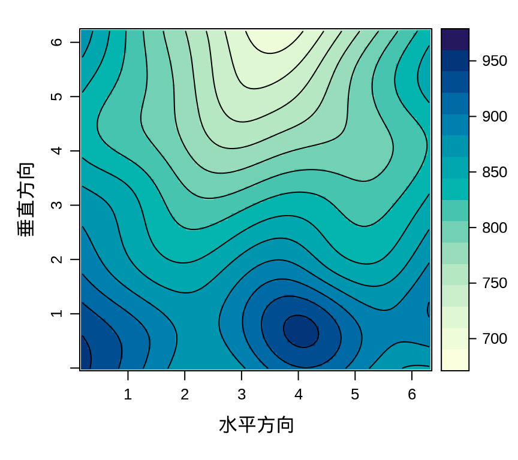
函数 panel.2dsmoother() 来自 latticeExtra 包，数据的二维分布，默认采用 tp
tpthin plate regression spline 回归样条方法平滑。crCubic regression spline 立方回归样条。gpGaussian process smooths 高斯过程平滑，默认为全秩 Full Rank，指定 k 低秩近似 Low Rank。
4.3.11 地区分布图
最后一个想要介绍的是地区分布图，也叫面量图、围栏图，描述空间栅格数据的分布，常见的一种情况是展示各个地区的人口、社会、经济指标。下面通过 tigris 包可以下载美国人口调查局发布的数据，本想下载与观测数据年份最近的地图数据，但是 2009 年及以前的地图数据缺失，因此，笔者下载了 2010 年的地图数据，它与得票率数据最近。
library(tigris)
us_state_map <- states(cb = TRUE, year = 2010, resolution = "20m", class = "sf")
us_state_map <- shift_geometry(us_state_map, geoid_column = "STATE", position = "below")第一行代码用 tigris 包的函数 states() 下载 2010 年比例尺为 1:20000000 的多边形州边界矢量地图数据，返回一个 simple feature 类型的空间数据类型。第二行代码用该包的另一个函数 shift_geometry() 移动离岸的州和领地，将它们移动到主体部分的下方。
library(sf)
us_state_sf <- readRDS("data/us-state-map-2010.rds")
# sf 转 sp
us_state_sp <- as(us_state_sf, "Spatial")
library(maps)
# sp 转 map
us_state_map <- SpatialPolygons2map(us_state_sp, namefield = "NAME")
# 准备观测数据
data(votes.repub)
# 转为 data.frame 类型
votes_repub <- as.data.frame(votes.repub)数据集 votes.repub 记录 1856-1976 年美国历届大选中共和党在各州的得票率。图中以由红到蓝的颜色变化表示由低到高的得票率，1964 年共和党在东南一隅得票率较高，在其它地方得票率普遍较低，形成一边倒的情况，最终由民主党的林登·约翰逊当选美国第36任总统。1968 年共和党在东南部得票率最低，与 1964 年相比，整个反过来了，最终由共和党的理查德·尼克松当选美国第37任总统。
library(RColorBrewer)
rdbu_pal <- colorRampPalette(colors = brewer.pal(n = 11, name = "RdBu"))
mapplot(rownames(votes_repub) ~ `1964` + `1968`, data = votes_repub,
border = NA, map = us_state_map, colramp = rdbu_pal, layout = c(1, 2),
scales = list(draw = FALSE), xlab = "", ylab = ""
)
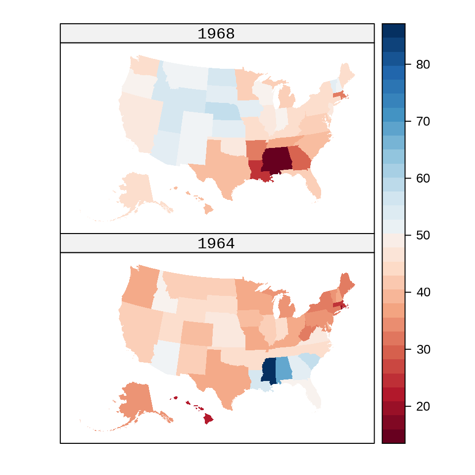
参数 border 设置州边界线的颜色，NA 表示去掉边界线。参数 map 设置州边界地图数据。参数 colramp 设置一个调色板，用于将得票率与调色板上的颜色映射起来。美国历届大选，共和党和民主党竞争总统职位，最终由得票率决定，用红蓝对抗型调色板表现竞争关系。基于 RColorBrewer 包的 RdBu 调色板，用函数 colorRampPalette() 构造一个新的红蓝调色板。参数 layout 将多个子图按照一定顺序排列，图中设置 2 行 1 列的多图布局。参数 scales 用来调整刻度，设置 list(draw = FALSE) 将图中的刻度去掉了。参数 xlab 设置一个空字符，即 xlab = "" 可去掉横坐标轴标签，参数 ylab 应用于设置纵坐标，用法与参数 xlab 一样。图中，主要表现得票率在各州的分布，因此，坐标轴刻度和标签都不太重要，可以去掉。
4.4 总结
现在回过头来看，无论是图形样式还是绘图语法， lattice 可以看作是介于 Base R 和 ggplot2 之间的一种绘图风格。举例来说，下面比较 Base R 和 lattice 的图形样式。
plot(Sepal.Length ~ Petal.Length, col = Species, data = iris,
xlab = "萼片长度", ylab = "花瓣长度")
xyplot(Sepal.Length ~ Petal.Length, groups = Species, data = iris,
scales = "free", xlab = "萼片长度", ylab = "花瓣长度")
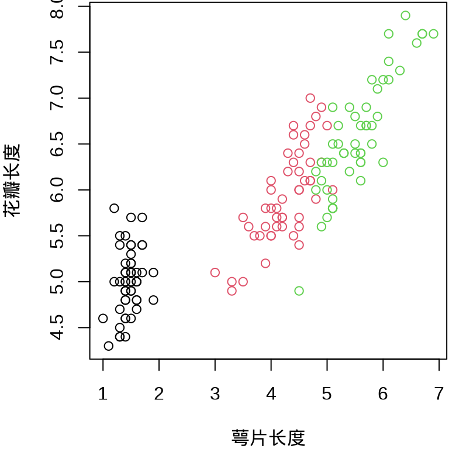
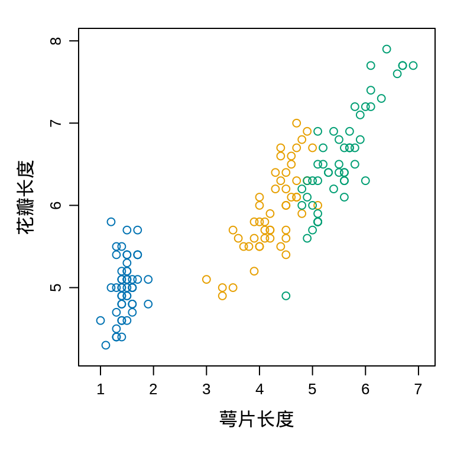
与函数 plot() 对应的是函数 xyplot() ，它们共用一套公式语法，参数 data 的含义也是一样的。与参数 col 对应的是参数 groups ，作用是添加数据分组标识。在两个函数中，添加横纵坐标轴标签都是用参数 xlab 和 ylab 。函数 xyplot() 中参数 scales 的作用是对坐标轴刻度的调整，参数值 "free" 表示去掉图形上边和右边的刻度线，默认情况下是有刻度线的。
在高级的绘图函数方面，Base R 和 lattice 基本都有功能对应的函数，在低水平的绘图函数方面，二者截然不同，主要是因为后者基于另一套绘图系统 — grid 绘图系统。Base R 作图常常需要一个函数一个函数地不断叠加，在图中画上点、线、轴、标签等元素，而 lattice 主要通过面板函数，层层叠加的方式，每一个面板函数实现一个功能，整合一系列绘图操作。本章主要介绍 lattice 包和 latticeExtra 包，用到的高级绘图函数如下表。
| R 包 | 函数 | 图形 | 作用 |
|---|---|---|---|
| lattice | xyplot() |
（分组）散点图 | 描述关系 |
| lattice | bwplot() |
（分组）箱线图 | 描述分布 |
| lattice | barchart() |
（分组）柱形图 | 描述对比 |
| lattice | levelplot() |
切片水平图 | 描述趋势 |
| lattice | wireframe() |
三维透视图 | 描述趋势 |
| lattice | cloud() |
三维散点图 | 描述分布 |
| latticeExtra | panel.smoother() |
回归曲线图 | 描述趋势 |
| latticeExtra | panel.2dsmoother() |
地形轮廓图 | 描述趋势 |
| latticeExtra | ecdfplot() |
经验分布图 | 描述分布 |
| latticeExtra | segplot() |
置信区间图 | 描述不确定性 |
| latticeExtra | panel.ellipse() |
置信椭圆图 | 描述不确定性 |
| latticeExtra | mapplot() |
地区分布图 | 描述分布 |